Monthly boards · wider redraws
12 new 2:1 illustrations, drawn from the existing boards. The originals remain unchanged in gameplay. The first three requested priorities appear first. Click any new board for its full PNG.
Papel Picado · first priority
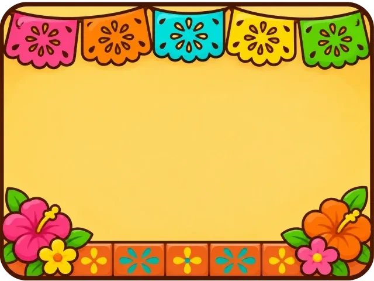
Original · 4:3New redraw · 2:1 · 1774 × 887Spring Meadow · first priority
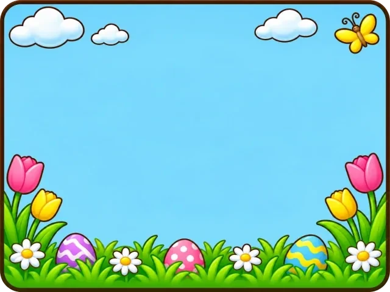
Original · 4:3New redraw · 2:1 · 1774 × 887Love Letters · first priority
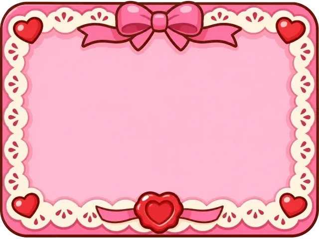
Original · 4:3New redraw · 2:1 · 1774 × 887Midnight Sky
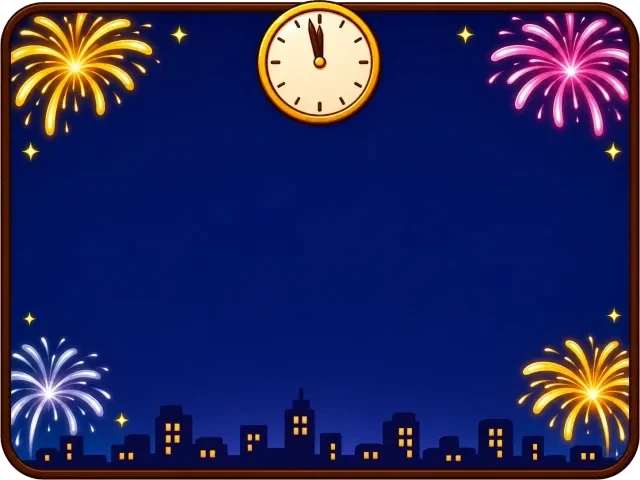
Original · 4:3How many ants long is a pencil? New redraw · 2:1 · 1774 × 887Green Hills
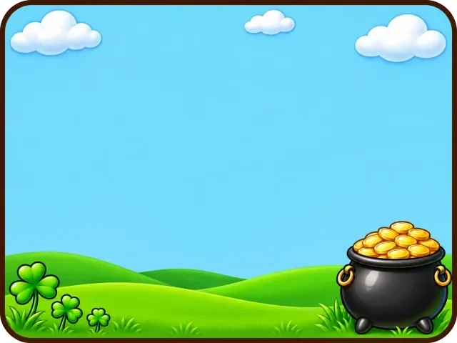
Original · 4:3New redraw · 2:1 · 1774 × 887Pool Deck
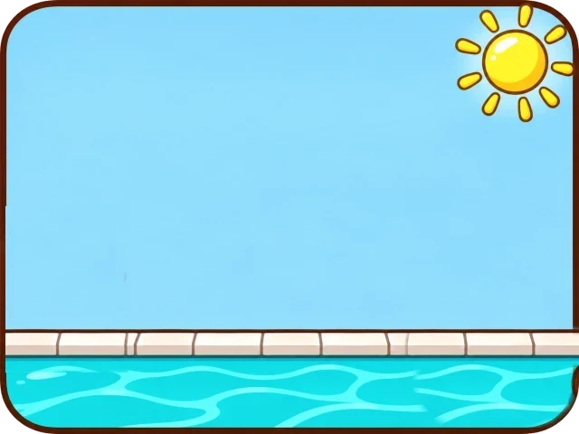
Original · 4:3New redraw · 2:1 · 1774 × 887Backyard Dusk
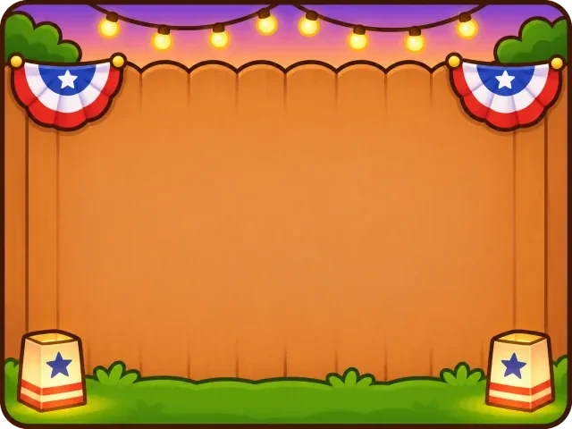
Original · 4:3New redraw · 2:1 · 1774 × 887Underwater
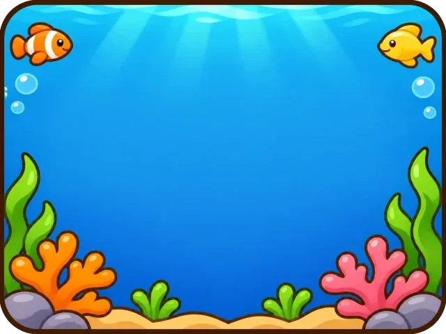
Original · 4:3New redraw · 2:1 · 1774 × 887Haunted Window
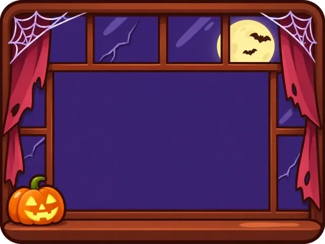
Original · 4:3New redraw · 2:1 · 1774 × 887Harvest Table
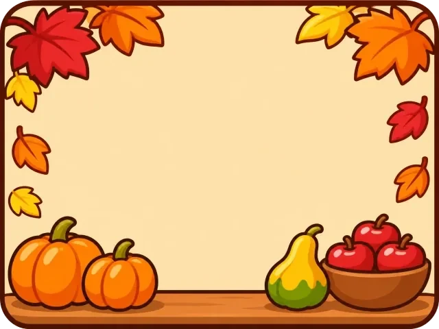
Original · 4:3New redraw · 2:1 · 1774 × 887Fireplace
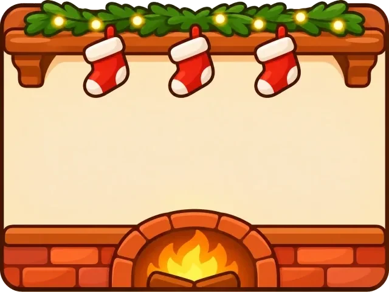
Original · 4:3New redraw · 2:1 · 1774 × 887Clean Notebook
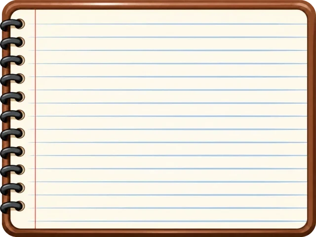
Original · 4:3How many ants long is a pencil? New redraw · 2:1 · 1774 × 887